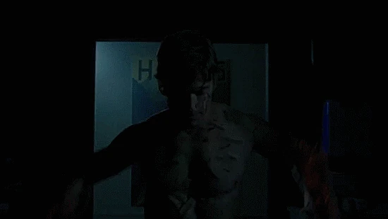
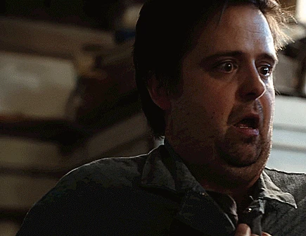
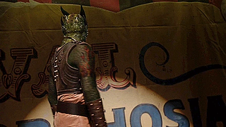
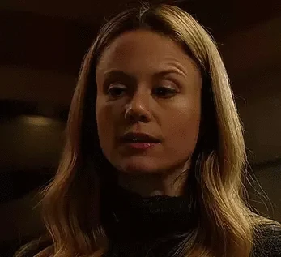
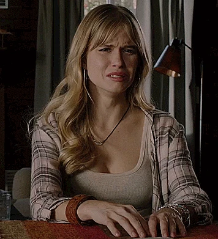
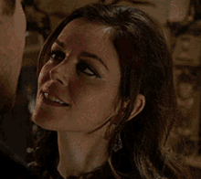
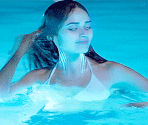
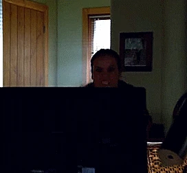
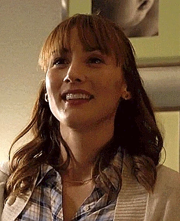

Esse wesen nunca foi apresentado, somente comentado por dois personagens. Assim como o curupira do nosso folclore, esses wesen parecem não tolerar desrespeito a natureza e caçadores, sendo muito protetores de seu território.

Está entre os wesen mais perigosos já observados, já que o calor que emanam torna difícil se aproximar deles. Eles possuem forte tendência à piromania e incêndios criminosos. São a inspiração para a fênix.

Sua pelagem dourada opaca, narizes pretos e dentes frontais grandes remetem a um castor. Não possuem aprimoramente físico ou habilidades especiais como outros wesen, porém sua fofura ganha o oitavo lugar.

Inspirou os dragões dos contos de fadas, justamente por sua aparência e sua habilidade de produzir fogo e fumaça. São colecionadores de tesouros, gostando de ouro e joias, mas nos tempos modernos, principalmente cobre.

Inspirado pelas bruxas dos contos de fadas, Hexenbiest se refere às mulheres, enquanto Zauberbiest para os homens. É um dos wesen mais poderosos por possuirem habilidades especiais. Além disso, possuem conhecimento de misturas e poções químicas ou alquímicas (Zaubertränke).

Wesen semelhante a um gato. As fêmeas não são tão agressivas nem tão traiçoeiras quanto os machos, mas tendem a andar com más companhias, entretanto, são bem mais amorosas do que os machos.

Esse wesen justifica o que os antigos gregos se referiam às Musas, já que são conhecidos por serem grandes fontes de inspiração para índividuos talentosos, como artistas e poetas. Suas características físicas da transformação lembram elfos.

No universo da série, elas seriam as sereias e as ninfas gregas. Acho muito bonito os olhos ficando claros e as características aquáticas, como as fendas braquiais e as membranas entres os dedos, com as transformações, principalmente nas mulheres.

Balam são semelhantes a jaguares e extremamente protetores aos seus pertences e família, se tornando obsessivos caso algo ou alguém importante para eles desapareça. Acho a cor da pelagem (azul ou cinza-claro, dependendo da iluminação) muito bonita.

Semelhante a uma raposa (meu animal favorito). É a transformação mais fofa e bonita de todas, na minha opinião. Além disso, a personagem fuchsbau que mais aparece, Rosalee, é a melhor personagem da série.